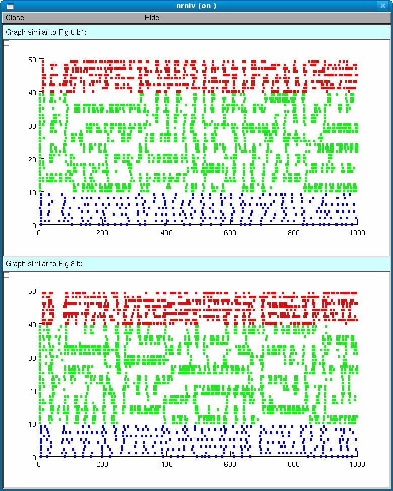

This is the readme for the model associated with the paper:
Philip J. Hahn and Cameron C. McIntyre (2010). Modeling shifts in the
rate and pattern of subthalamopallidal network activity during deep
brain stimulation. J. Comp. Neurosci. 28(3):425-441.
This NEURON code (NEURON is required and available
from http://www.neuron.yale.edu)
contains a Basal Ganglia network model of parkinsonian activity and
subthalamic deep brain stimulation in non-human primates.
Instructions are provided here. Contact hahnp at ccf.org if you have any
questions about the implementation of the model. Please include
"ModelDB - BGnet" in the subject heading. These model files were supplied
by Philip Hahn.
1. Contents
readme.txt This file
pSTN.tem STN neuron template
pGPeA.tem GPe neuron template
pGPi.tem GPi neuron template
pSTN.mod STN kinetics
pGPeA.mod GPe/GPi kinetics
ampap.mod Glutamatergic synapse
gabaap.mod Gabaergic synapse
dbsStim.mod Stimulation induced current mechanism
twoStateGen.mod Generate stochastic, bursting trains
scopRandom.mod Hook scop_random RNG
myions.mod Allow initialization of ion concentrations
pBGconst.hoc Parameter handling support
pBGbias.hoc Bias current support
pBGconnect1.hoc Synaptic connections support
pBGinput.hoc Support for generation of input spike trains
pBGstim.hoc DBS stim current support
pBGrecord.hoc Allow recording of overall GPi axonal output
pBGutil.hoc General support
pBGburstSearch.hoc Burst detection algorithm
pBGconfData.hoc Simulation run script support
parBGLaunch.hoc Main program file, launches simulation run scripts
pBGLaunch.000 Sample simulation run script
pPARrun.txt Default parameter settings (MPTP state)
pNets.dat Published parameter set (best match)
randseed.txt Random seed updated after each run
2. Running the model
Either auto-launch the model from ModelDB and then explore the model
with Tools -> modelview or hit the start button and wait about 15
seconds for two abreviated runs (1000 seconds of simulation time each)
which should produce a network activity graph similar to Fig. 6b1 and
Fig. 8b except the bursts are not identified:

Or:
First, recompile the mod files to generate a nrnmech.dll as needed for
your system (eg mknrndll or nrnivmodl). Simulations are run by
loading or executing parBGLaunch.hoc, which initializes the model and
executes commands in a script file. The script file is named
pBGLaunch.nnn, where 'nnn' is an integer entered by the user at the
prompt. A sample script is included and described below
(pBGLaunch.000) that runs a simulation in MPTP mode and then runs it
again with DBS inputs active. For both runs population statistics as
well as spike times are saved in text files.
--------------- pBGLaunch.000 sample script file ------------------------------
strdef str
tstop = 10000 //set the simulation time in milliseconds
netNum = 0
getOutput("pNets.dat", netNum, 1) //load a parameter set
setMPTPinput() //configure parameters for MPTP settings
//setNORMALinput() //uncomment for Normal settings
runNum = 0
pnm.prun() //run the model
pnm.gatherspikes() //collect spikes from nodes (required for parallel runs)
netStats(res) //calculate population statistics
saveData(netNum, res) //append results to a file stats000.txt
sprint(str, "spikes%03d.txt", runNum) //put identifying number in filename
saveSpikes(str) //save spike time data for all cells to spikes000.txt
runNum = 1
setDBS(.4,.2) //activate DBS for 40% of STN and 20% of GPi axons
pnm.prun() //run the model
pnm.gatherspikes() //collect spikes from nodes (required for parallel runs)
netStats(res) //calculate population statistics
saveData(netNum, res) //append results to a file stats000.txt
sprint(str, "spikes%03d.txt", runNum) //put identifying number in filename
saveSpikes(str) //save spike time data for all cells to spikes000.txt
quit() //exit Neuron and close all windows
-------------------------------------------------------------------------------
Note, omitting the last line will leave Neuron in the interactive mode
when the simulation has completed. At that point, graph and run
windows may be opened and the simulation rerun.
3. Platform notes
Neuron v5.8 was used to run simulations. The included 'small net' has
50 cells (see pPARrun.txt) and runs well in a Windows XP environment.
Published data used 500 cells in the same ratio of 1:3:1
(STN:GPe:GPi).Data collection was performed on a 16 node cluster using
Neuron's network manager objects over MPI. This model is currently
being ported to a Python version of Neuron.